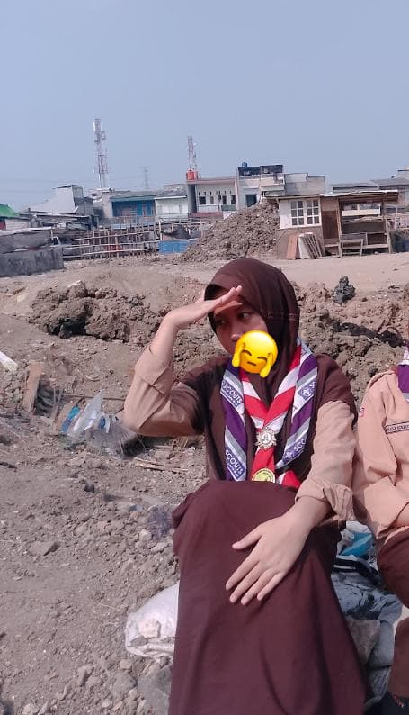
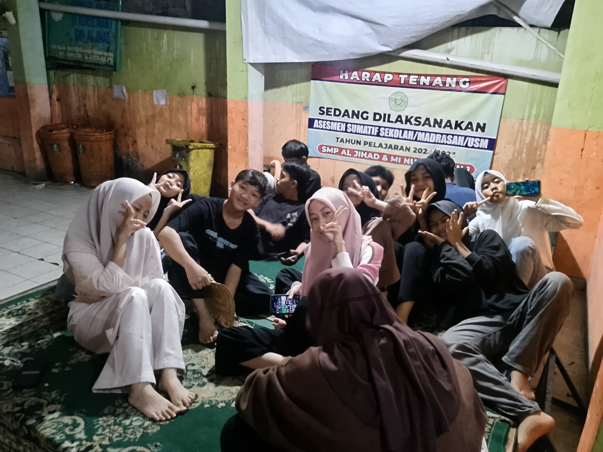
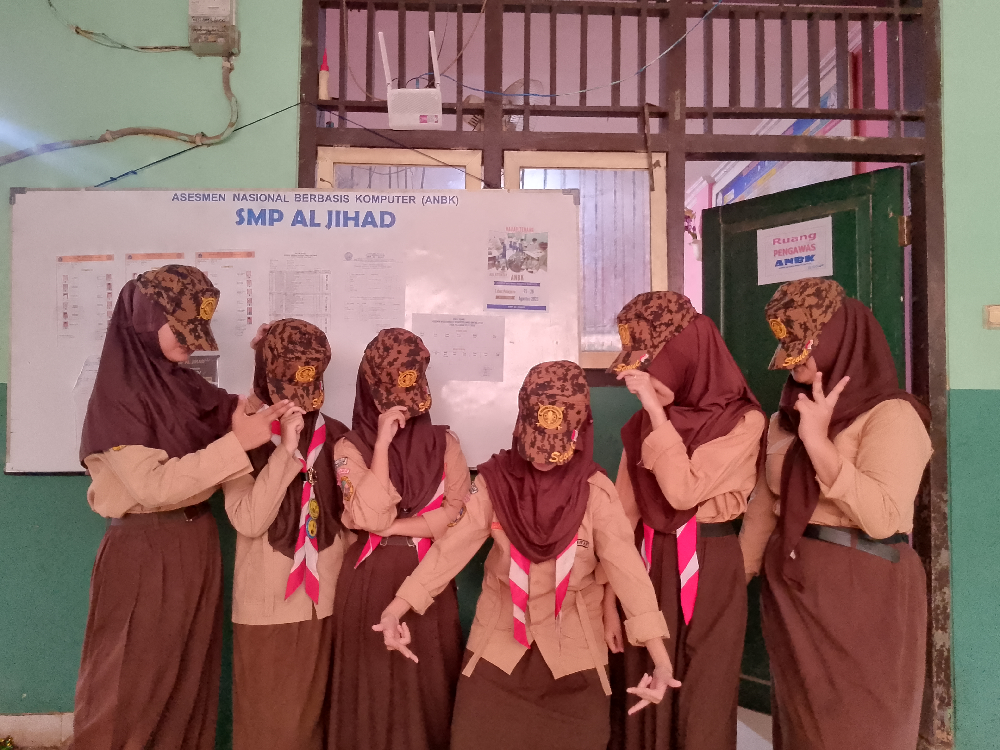
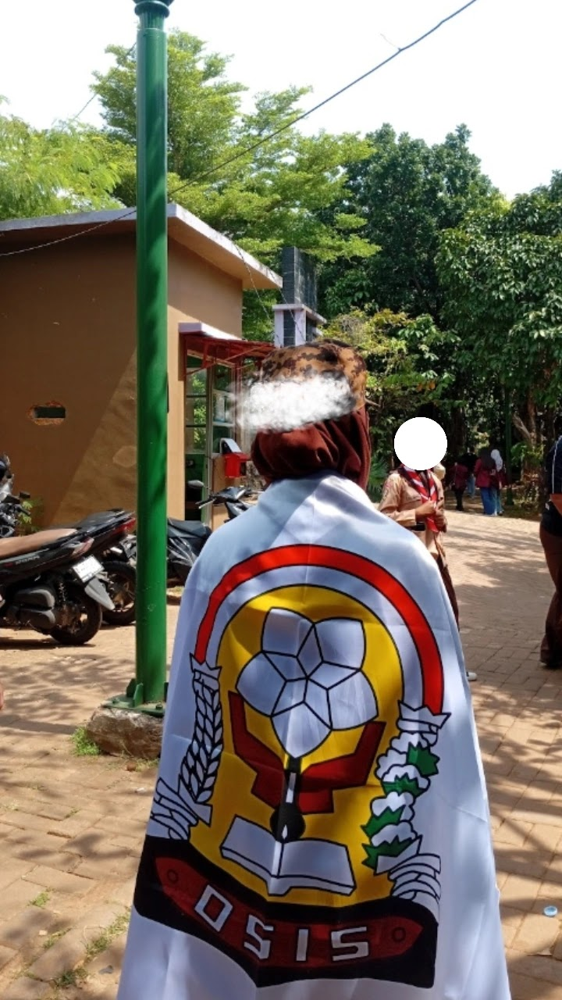
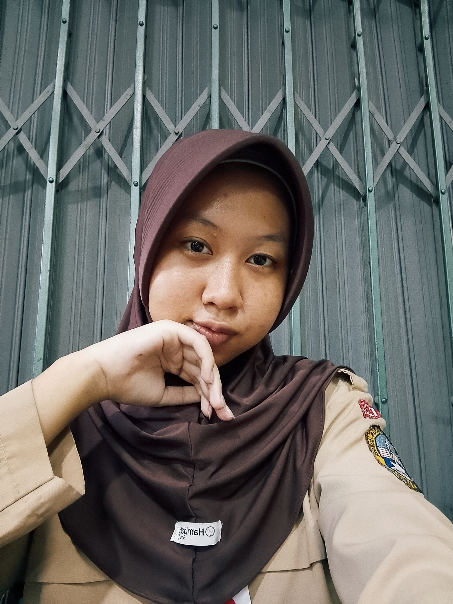

Informatika
Website Portofolio
Membuat website portofolio pribadi menggunakan HTML, CSS, dan JavaScript.
Lihat KaryaHalo, saya
Pelajar SMK yang sedang belajar, berkembang, dan mencoba berbagai hal baru untuk menjadi versi terbaik dari diri sendiri.

Tentang Saya
Sedikit cerita tentang diri saya, minat, dan hal-hal yang sedang saya pelajari.
Saya adalah seorang pelajar SMK yang senang belajar hal-hal baru dan mencoba pengalaman yang berbeda. Bagi saya, setiap proses adalah kesempatan untuk berkembang.
Saya tertarik dengan dunia organisasi, kreativitas, teknologi, dan berbagai kegiatan yang dapat menambah pengalaman serta kemampuan.
Curriculum Vitae
Pendidikan, pengalaman organisasi, dan kemampuan yang sedang saya kembangkan.
Jurusan Manajemen Perkantoran
Menyelesaikan pendidikan tingkat SMP dan aktif dalam kegiatan sekolah.
Pernah aktif dalam kepengurusan OSIS dan dipercaya untuk menjalankan tanggung jawab dalam organisasi.
Berusaha berkontribusi dalam kegiatan sekolah dan belajar menjadi pemimpin yang bertanggung jawab.
Portfolio
Beberapa tugas dan karya yang pernah saya kerjakan.
Membuat website portofolio pribadi menggunakan HTML, CSS, dan JavaScript.
Lihat KaryaMembuat materi presentasi sekolah dengan desain sederhana dan informatif.
Lihat KaryaBerpartisipasi dalam berbagai kegiatan organisasi dan kegiatan sekolah.
Lihat KaryaBerbagai tugas kreatif yang dikerjakan selama proses pembelajaran di sekolah.
Lihat KaryaGaleri
Momen dan kenangan berharga.




* Ganti foto1.jpg, foto2.jpg, foto3.jpg, dan foto4.jpg dengan foto milikmu sendiri.
Artikel
Beberapa tulisan singkat mengenai pengalaman dan hal-hal yang saya pelajari.
Menjadi pelajar bukan hanya tentang mendapatkan nilai, tetapi juga belajar menghadapi berbagai pengalaman baru.
Baca SelengkapnyaOrganisasi mengajarkan saya tentang tanggung jawab, kerja sama, komunikasi, dan menghargai pendapat orang lain.
Baca Selengkapnya